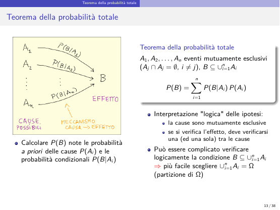
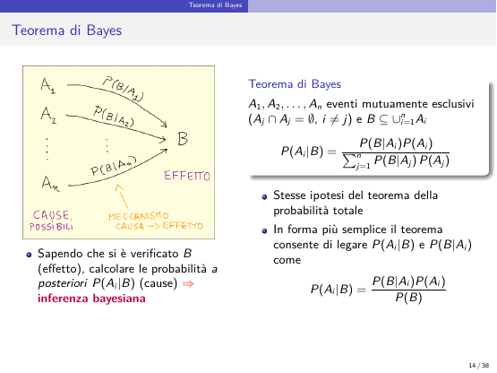
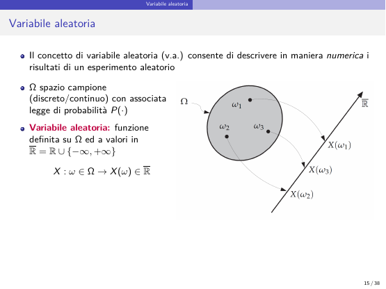
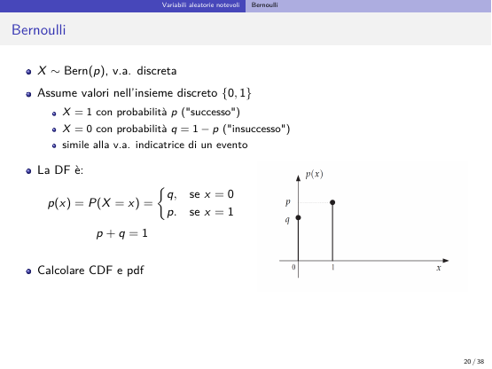
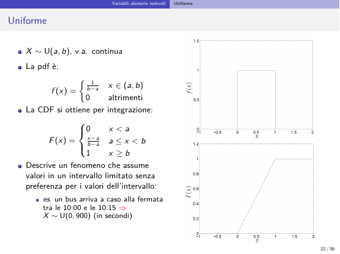
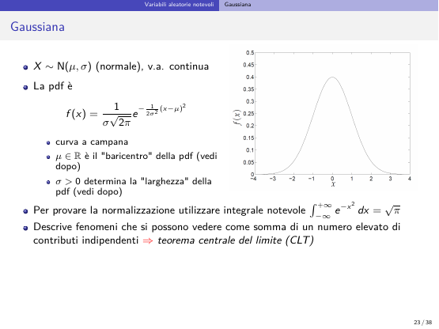
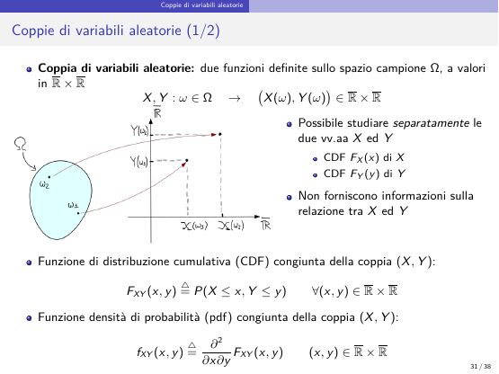

Home · Lezioni · Lezione 2 · 16/09
Elementi di teoria della probabilità
Spazio di probabilità, probabilità condizionale, Bayes, variabili aleatorie notevoli, gaussiana, media, varianza, coppie, correlazione.
Indice della lezione
- Definizioni preliminari
- Prova e significato degli eventi
- Spazio degli eventi e probabilità
- Proprietà elementari
- Probabilità condizionale
- Legge della probabilità composta
- Regola della catena
- Indipendenza tra eventi
- Teorema della probabilità totale
- Teorema di Bayes
- Variabile aleatoria
- CDF
- DF (pmf)
- Variabili aleatorie notevoli
- Funzione di una v.a.
- Media e momenti
- Varianza
- Proprietà di media e varianza
- Coppie di v.a.
- Distribuzioni condizionali e indipendenza
- Caratterizzazione sintetica di una coppia
- Spiegazioni e dimostrazioni passo-passo
- Domande da esame
Il corso, slide per slide
Definizioni preliminari
- Esperimento aleatorio: procedura con un insieme ben definito di risultati, il cui esito non è prevedibile a priori (lancio di moneta o dado, estrazione di una carta, lotto, roulette). Il risultato è indicato con \omega.
- Spazio campione \Omega: insieme di tutti i possibili risultati. Moneta: \Omega = \{T, C\}; dado: \Omega = \{1, \dots, 6\}; arrivo di un cliente a uno sportello tra le 9:00 e le 12:00: \Omega = [0, 10800] s.
- Evento: un qualunque sottoinsieme A \subseteq \Omega.
Prova e significato degli eventi
Prova = singola ripetizione dell'esperimento, restituisce un risultato \omega\in\Omega.
| Si verifica | \iff |
|---|---|
| A | \omega\in A |
| non A (\bar A, complementare) | \omega\notin A |
| A o B | \omega\in A\cup B |
| A e B | \omega\in A\cap B |
Eventi particolari: certo A=\Omega (si verifica sempre); impossibile A=\varnothing (mai); elementare A=\{\omega\} (un solo risultato); mutuamente esclusivi A\cap B=\varnothing (non possono verificarsi insieme).
Esempio 1.4 (dado, prova \omega=4): A=\{\text{pari}\} si verifica; B=\{\ge 3\} si verifica; C=\{<2\} non si verifica; «A e B» si verifica; «A o C» si verifica; «A e C» no.
Spazio degli eventi e probabilità
- Spazio degli eventi S: collezione di eventi che contiene tutti quelli di interesse (in molti casi, tutti i sottoinsiemi, compresi \Omega e \varnothing).
- Probabilità: legge P: A\in S \mapsto P(A)\in[0,1], misura del «grado di incertezza» sul verificarsi di A. Deve soddisfare gli assiomi di Kolmogorov:
- I. P(A)\ge 0 (non negatività);
- II. P(\Omega)=1 (normalizzazione);
- III. per eventi mutuamente esclusivi \{A_n\}_{n=1}^{\infty} (A_i\cap A_j=\varnothing, \forall i\ne j): P\big(\bigcup_n A_n\big)=\sum_n P(A_n) (numerabile additività).
- La tripla (\Omega, S, P) è lo spazio di probabilità.
Proprietà elementari
Dimostrabili dagli assiomi:
- P(\varnothing)=0;
- A\cap B=\varnothing \Rightarrow P(A\cup B)=P(A)+P(B) (finita additività);
- P(\bar A)=1-P(A);
- P(A\cup B)=P(A)+P(B)-P(A\cap B);
- P(A\cup B)\le P(A)+P(B) (disuguaglianza di Boole);
- B\subseteq A\Rightarrow P(B)\le P(A);
- P(B)\le 1.
Probabilità condizionale
Dati A, B con P(B)\ne 0:
- È un «raffinamento» di P(A): tiene conto dell'informazione che B si è verificato. Esempio 2.2: A=\{\text{piove}\}, B=\{\text{estate}\}\Rightarrow P(A\mid B)<P(A); con B=\{\text{inverno}\}\Rightarrow P(A\mid B)>P(A).
- P(A\mid B)>P(A): A è «attratto» da B; <: «respinto»; =: «indifferente» (indipendenza).
- Dipende dall'ordine: P(A\mid B)=P(AB)/P(B)\ne P(B\mid A)=P(BA)/P(A) in generale (denominatori diversi). Es.: B\subseteq A (B implica A) \Rightarrow P(A\mid B)=1 e P(B\mid A)\ge P(B).
- Fissato B\subseteq\Omega, P(\cdot\mid B) si interpreta come (1) una nuova legge di probabilità sullo stesso \Omega, o (2) una legge sul nuovo spazio campione \Omega_B=B (restrizione della legge originale a B): in entrambi i casi gli assiomi di Kolmogorov sono soddisfatti.
Legge della probabilità composta
Scompone il calcolo della probabilità congiunta in più passi. Matematicamente l'ordine è ininfluente; in pratica conviene condizionare all'evento che si verifica «prima» (logicamente o cronologicamente).
Esempio 2.3 (due palle da una scatola con 3 bianche e 2 rosse): soluzione combinatoria vs condizionale. Per due bianche: P(B_1B_2)=P(B_2\mid B_1)P(B_1)=\frac24\cdot\frac35=\frac{3}{10}; combinatoria: \binom32/\binom52=3/10.
Regola della catena
P(A\mid B,C)\triangleq P(ABC)/P(BC), con P(BC)\ne0 (l'evento condizionante è B\cap C). Applicando la probabilità composta a P(BC):
Scegliendo A\to B\to C: P(ABC)=P(A)P(B\mid A)P(C\mid A,B). Esistono 3!=6 modi di scrivere P(ABC). In generale:
scrivibile in n! modi (permutazioni degli eventi).
Indipendenza tra eventi
- La condizione di «indifferenza» P(A\mid B)=P(A) si chiama indipendenza statistica: sapere che B è avvenuto non dà informazione su A. Implica P(B\mid A)=P(B): proprietà simmetrica.
- A e B sono indipendenti se P(AB)=P(A)P(B) (la congiunta si fattorizza nel prodotto delle marginali). Non confondere indipendenti con mutuamente esclusivi. Esempio 2.6: due lanci di moneta.
- Tre eventi A,B,C sono indipendenti se (1) vale l'indipendenza a coppie, P(AB)=P(A)P(B), P(BC)=P(B)P(C), P(AC)=P(A)P(C), e (2) P(ABC)=P(A)P(B)P(C). Non basta la sola seconda fattorizzazione. Equivale a dire che in tutte le probabilità condizionali tra tre eventi il condizionamento non opera: P(A\mid B,C)=P(A), ..., P(AB\mid C)=P(AB), ...
- A_1,\dots,A_n sono indipendenti se P\big(\bigcap_{i\in I}A_i\big)=\prod_{i\in I}P(A_i) per ogni insieme I\subseteq\{1,\dots,n\} di indici distinti.
Teorema della probabilità totale

Si vuole P(B) note le probabilità a priori delle cause P(A_i) e le condizionali P(B\mid A_i). Con A_1,\dots,A_n mutuamente esclusivi e B\subseteq\bigcup_iA_i:
Le cause sono mutuamente esclusive: se si verifica l'effetto, si verifica una (e una sola) causa. Verificare logicamente B\subseteq\bigcup A_i può essere complicato: più facile scegliere \bigcup A_i=\Omega (partizione di \Omega).
Teorema di Bayes

Noto che si è verificato B (effetto), si calcolano le probabilità a posteriori delle cause (inferenza bayesiana). Stesse ipotesi della probabilità totale:
Variabile aleatoria
Descrive numericamente i risultati di un esperimento aleatorio. Sia \Omega lo spazio campione (discreto o continuo) con legge P(\cdot). Una variabile aleatoria (v.a.) è una funzione definita su \Omega a valori in \bar{\mathbb R}=\mathbb R\cup\{-\infty,+\infty\}:

CDF
Proprietà:
- F(+\infty)=1, F(-\infty)=0;
- monotona crescente (non strettamente): x_1<x_2\Rightarrow F(x_1)\le F(x_2);
- P(X>x)=1-F(x) (CDF complementare o funzione di affidabilità);
- continua da destra: F(x^+)=F(x);
- P(x_1<X\le x_2)=F(x_2)-F(x_1);
- P(X=x)=F(x)-F(x^-).
Tipi di v.a.: discreta → CDF costante a tratti, F(x)=\sum_ip_i\,u(x-x_i); continua → CDF continua (quindi P(X=x)=0 ovunque); mista → CDF discontinua ma non costante a tratti.
Per X continua la pdf non contiene impulsi; per X discreta f(x)=\sum_ip_i\,\delta(x-x_i) (derivata in senso generalizzato). Proprietà:
- f(x)\ge0;
- F(x)=\int_{-\infty}^{x}f(y)\,dy;
- \int_{-\infty}^{+\infty}f(x)\,dx=1;
- P(x_1<X\le x_2)=F(x_2)-F(x_1)=\int_{x_1}^{x_2}f(x)\,dx (attenzione se la pdf ha impulsi in x_1 e/o x_2);
- P(x\le X\le x+\Delta x)\approx f(x)\Delta x, cioè f(x)=\lim_{\Delta x\to0}\frac{P(x\le X\le x+\Delta x)}{\Delta x}.
DF (pmf)
Utile solo per v.a. discrete (è nulla fuori dagli x_i); detta anche funzione «massa» di probabilità. Proprietà: p(x)\ge0; F(x)=\sum_{u\le x}p(u); \sum_up(u)=1; P(x_1<X\le x_2)=\sum_{x_1<u\le x_2}p(u).
Variabili aleatorie notevoli
Bernoulli X\sim\text{Bern}(p) (discreta, valori \{0,1\}; simile all'indicatrice di un evento). X=1 con probabilità p («successo»), X=0 con q=1-p («insuccesso»), p+q=1:

Binomiale X\sim B(n,p) (discreta): conteggio del numero di «successi» su n prove ripetute, valori \{0,\dots,n\}:
CDF e pdf: F(x)=\sum_{k}p(k)\,u(x-k), f(x)=\sum_kp(k)\,\delta(x-k). Normalizzazione dalla potenza di un binomio: 1=(p+q)^n=\sum_{k=0}^n\binom nk p^kq^{n-k}. La Bernoulli è il caso n=1.
Uniforme X\sim U(a,b) (continua), fenomeno in un intervallo limitato senza preferenza per i valori:
Esempio: un bus arriva a caso tra le 10:00 e le 10:15 \Rightarrow X\sim U(0,900) s.

Gaussiana (normale) X\sim N(\mu,\sigma) (continua), curva a campana:
\mu\in\mathbb R è il «baricentro», \sigma>0 la «larghezza». Per la normalizzazione si usa \int_{-\infty}^{+\infty}e^{-x^2}dx=\sqrt\pi. Descrive fenomeni che sono somma di molti contributi indipendenti (teorema centrale del limite, CLT).

CDF della gaussiana — non in forma chiusa:
Da cui:
Q-function: Q(x)\triangleq\frac1{\sqrt{2\pi}}\int_x^{+\infty}e^{-t^2/2}dt\equiv\frac12\,\text{erfc}\big(\frac{x}{\sqrt2}\big).
In Matlab: erf, erfc, qfunc. Esempio: CDF di N(0,1) con x = -3:0.1:3; y = (1/2)*(1+erf(x/sqrt(2))); plot(x,y).
Funzione di una v.a.
Y=g(X) è a sua volta una v.a.; la sua CDF segue dalla definizione, F_Y(y)=P(\omega: g(X(\omega))\le y). Se y=g(x) ha un numero finito di soluzioni x_i con g'(x_i)\ne0:
Esempio: X\sim N(0,1), Y=aX+b: g'(x)=a, unica soluzione x_1=(y-b)/a, quindi
La trasformazione affine di una gaussiana è ancora gaussiana.
Media e momenti
Per una gaussiana si prova che \mu=E(X). Teorema fondamentale della media: per Y=g(X)
Per v.a. discrete: E(X)=\sum_ip(x_i)x_i, E[g(X)]=\sum_ip(x_i)g(x_i).
Varianza
Dal teorema fondamentale con g(X)=(X-E(X))^2:
Per una gaussiana \sigma^2=\text{Var}(X). Relazione fondamentale (espandendo il quadrato e usando la linearità): \text{Var}(X)=E(X^2)-E^2(X), con E(X^2)=\int x^2f(x)\,dx il valor quadratico medio.
Proprietà di media e varianza
Media: (1) linearità E[a\,g(X)+b\,h(X)]=a\,E[g(X)]+b\,E[h(X)], in particolare E(aX+b)=aE(X)+b; (2) g\ge0\Rightarrow E[g(X)]\ge0; (3) g_1\ge g_2\Rightarrow E[g_1]\ge E[g_2]; (4) a\le g\le b\Rightarrow a\le E[g(X)]\le b.
Varianza: \text{Var}(aX+b)=a^2\text{Var}(X) (non dipende da b: invarianza per traslazione), \sigma_Y=\lvert a\rvert\sigma_X. V.a. centrata Y=X-\mu_X: E(Y)=0, \text{Var}(Y)=\text{Var}(X).
Coppie di v.a.

Una coppia di v.a. sono due funzioni su \Omega: \omega\mapsto(X(\omega),Y(\omega))\in\mathbb R\times\mathbb R. Studiare X e Y separatamente (CDF F_X, F_Y) non dice nulla sulla loro relazione. Si definiscono:
Proprietà:
- F_X(x)=F_{XY}(x,+\infty) e 2. F_Y(y)=F_{XY}(+\infty,y) (CDF marginali);
- f_X(x)=\int f_{XY}(x,y)\,dy e 4. f_Y(y)=\int f_{XY}(x,y)\,dx (pdf marginali);
- \iint f_{XY}\,dx\,dy=1;
- P((X,Y)\in A)=\iint_Af_{XY}\,dx\,dy;
- F_{XY}(x,y)=\int_{-\infty}^x\int_{-\infty}^yf_{XY}(u,v)\,du\,dv.
Proprietà della CDF congiunta: F(-\infty,y)=F(x,-\infty)=0, F(+\infty,+\infty)=1; P(x_1<X\le x_2,Y\le y)=F(x_2,y)-F(x_1,y) (analoga in Y); e
(regola mnemonica: + per coppie «concordi», - per discordi).
Distribuzioni condizionali e indipendenza
Come cambia la pdf marginale di Y fissando \{X=x\} (es.: il peso di una persona data la sua altezza):
X e Y sono statisticamente indipendenti se f_{XY}(x,y)=f_X(x)f_Y(y) (equivalente in termini di CDF congiunta o DF congiunta per v.a. discrete). Allora f_X(x\mid y)=f_X(x) e f_Y(y\mid x)=f_Y(y): la condizionale coincide con la marginale.
Caratterizzazione sintetica di una coppia
Teorema fondamentale della media: per Z=g(X,Y)
Linearità: E[a_1g_1+a_2g_2]=a_1E[g_1]+a_2E[g_2]; in particolare E(a_1X+a_2Y)=a_1E(X)+a_2E(Y).
Correlazione e covarianza possono avere segno qualsiasi. Con X=Y: \text{Corr}(X,X)=E(X^2) (valor quadratico medio), \text{Cov}(X,X)=\text{Var}(X).
Proprietà:
- \text{Cov}(X,Y)=E(XY)-E(X)E(Y) (relazione fondamentale);
- E[(X+Y)^2]=E(X^2)+E(Y^2)+2E(XY); se X,Y ortogonali (E(XY)=0): E[(X+Y)^2]=E(X^2)+E(Y^2);
- \text{Var}(X+Y)=\text{Var}(X)+\text{Var}(Y)+2\text{Cov}(X,Y); se incorrelate (\text{Cov}=0): \text{Var}(X+Y)=\text{Var}(X)+\text{Var}(Y). Per n v.a.: \text{Var}\big(\sum_ic_iX_i\big)=\sum_ic_i^2\text{Var}(X_i)+\sum_i\sum_{j\ne i}c_ic_j\text{Cov}(X_i,X_j);
- \lvert E(XY)\rvert\le\sqrt{E(X^2)}\sqrt{E(Y^2)} (Schwarz), con uguaglianza se e solo se Y=a^\ast X in media quadratica;
- \lvert\text{Cov}(X,Y)\rvert\le\sigma_X\sigma_Y (Schwarz), con uguaglianza se e solo se Y=a^\ast X+b^\ast in media quadratica;
- \lvert\rho_{XY}\rvert\le1.
Spiegazioni e dimostrazioni passo-passo
Apri una voce per leggere la spiegazione in parole semplici e le dimostrazioni svolte riga per riga (🧩 = passaggio ricostruito da me).
Spazio di probabilità e assiomi di Kolmogorov
Spiegazione
Terminologia sugli eventi
| Linguaggio | Insiemi |
|---|---|
| si verifica A | \omega \in A |
| non si verifica A | \omega \notin A \iff \omega \in \bar A |
| si verifica A o B | \omega \in A \cup B |
| si verifica A e B | \omega \in A \cap B (si scrive anche AB) |
| evento certo | A = \Omega |
| evento impossibile | A = \emptyset |
| evento elementare | A = \{\omega\} |
| mutuamente esclusivi | A \cap B = \emptyset |
Esempio 1.4: dado, risultato \omega = 4. Svolto in calcolo probabilita eventi.
Interpretazione
La probabilità è una funzione d'insieme: prende eventi, non numeri. Gli assiomi sono il minimo indispensabile. Tutto il resto (proprietà 1–7, probabilita condizionale, probabilita totale e bayes) ne discende.
Perché importa
È la base formale per descrivere la natura statistica della comunicazione. La probabilità d'errore di un sistema digitale sarà la probabilità di un evento del tipo {simbolo deciso ≠ simbolo trasmesso}.
Dimostrazioni passo-passo
🧩 Derivazione mia: la slide dice che le proprietà «si possono dimostrare» dagli assiomi ma non mostra i passaggi.
Derivazione — Proprietà 1: P(\emptyset)=0
Si parte da: assioma III con A_1 = \Omega, A_n = \emptyset per n \ge 2 (a due a due disgiunti, perché \Omega \cap \emptyset = \emptyset).
Derivazione — Proprietà 2 (finita additività)
Si parte da: assioma III con A_1 = A, A_2 = B, A_n = \emptyset per n \ge 3.
Derivazione — Proprietà 3 (complementare)
Derivazione — Proprietà 4 (unione di eventi qualsiasi)
Idea: scompongo in eventi disgiunti.
Derivazione — Proprietà 5 (Boole)
Dalla 4, visto che P(AB) \ge 0 (assioma I): P(A\cup B) = P(A)+P(B)-P(AB) \le P(A)+P(B).
Derivazione — Proprietà 6 (monotonia)
Derivazione — Proprietà 7
B \subseteq \Omega, quindi per la prop. 6 P(B) \le P(\Omega) = 1.
Sanity check: tutte le proprietà danno valori in [0,1], coerenti con la definizione di P. Ipotesi: solo gli assiomi I–III; nessuna ipotesi su \Omega (discreto o continuo).
Probabilità condizionale, probabilità composta e indipendenza
Spiegazione
- Ordine degli eventi: matematicamente l'ordine nella probabilità composta è ininfluente, ma conviene condizionare sull'evento che si verifica prima, logicamente o cronologicamente. Esempio 2.3 (estrazione di due palle) → calcolo probabilita eventi.
- Indipendenti ≠ mutuamente esclusivi.
🧩 Derivazione mia: se A\cap B = \emptyset con P(A),P(B)>0, allora P(AB) = 0 \neq P(A)P(B) > 0. Due eventi disgiunti a probabilità non nulla sono quindi sempre dipendenti: sapere che si è verificato A esclude B.
- Per tre eventi indipendenti il condizionamento "non opera" mai: P(A|B,C)=P(A), P(AB|C) = P(AB), ecc.
- Esempio 2.6 (moneta lanciata due volte) → calcolo probabilita eventi.
🎯 Esame: la confusione tra eventi indipendenti ed eventi mutuamente esclusivi è una domanda classica.
Perché importa
In ricezione si ragiona sempre per condizionamento: la probabilità d'errore dato il simbolo trasmesso, la verosimiglianza del segnale ricevuto dato un'ipotesi. L'indipendenza dei simboli e del rumore rende trattabili i calcoli.
Dimostrazioni passo-passo
Derivazione — P(\cdot|B) soddisfa gli assiomi di Kolmogorov
🧩 Derivazione mia
Interpretazione 2: P(\cdot|B) è una legge sul nuovo spazio campione \Omega_B = B, cioè la restrizione della legge originale a B, rinormalizzata di 1/P(B).
Derivazione — Caso B \subseteq A
Da qui si vede che in generale P(A|B) \neq P(B|A): i denominatori sono diversi.
Derivazione — Regola della catena per tre eventi
La successione logica è C \to B \to A. Scegliendo l'ordine A\to B\to C si ottiene P(ABC)=P(A)P(B|A)P(C|A,B). Le permutazioni dei 3 eventi sono 3! = 6, quindi ci sono 6 scritture possibili. Per n eventi si procede per induzione applicando la stessa idea a P(A_1\cdots A_{n-1}), e le scritture sono n!.
Derivazione — L'indipendenza è simmetrica
🧩 Derivazione mia
\begin{aligned} P(A|B) = P(A) &\Rightarrow P(AB) = P(A|B)P(B) = P(A)P(B) && \text{prob. composta} \\ &\Rightarrow P(B|A) = \frac{P(AB)}{P(A)} = \frac{P(A)P(B)}{P(A)} = P(B) && P(A)\neq 0 \end{aligned}
Derivazione — Perché per tre eventi servono entrambe le condizioni
🧩 Derivazione mia: controesempi costruiti da me, non presenti nelle slide.
(a) La fattorizzazione tripla non implica quella a coppie. Prendo \Omega = \{1,\dots,8\} equiprobabile, A = B = \{1,2,3,4\}, C = \{1,5,6,7\}:
(b) L'indipendenza a coppie non implica quella tripla. Lancio due monete; A = {testa al 1° lancio}, B = {testa al 2°}, C = {i due lanci danno lo stesso risultato}. Ogni evento ha probabilità 1/2 e ogni coppia ha intersezione di probabilità 1/4 (es. AC = {TT}), quindi (1) vale. Però ABC = {TT} e P(ABC) = 1/4 \neq 1/8.
Ipotesi: equiprobabilità dei risultati elementari in entrambi i controesempi.
Teorema della probabilità totale e teorema di Bayes
Spiegazione
Lettura "logica" delle ipotesi:
- le cause sono mutuamente esclusive;
- se si verifica l'effetto, si è verificata una (e una sola) delle cause.
Verificare B \subseteq \bigcup_i A_i può essere complicato. Conviene scegliere gli A_i come partizione di \Omega (\bigcup_i A_i = \Omega): la condizione vale allora per ogni B.
🎯 Esame: saper enunciare le ipotesi, dire perché servono (senza esclusività si conterebbero due volte le intersezioni) e dare la lettura cause/effetto.
Perché importa
Bayes è la base della decisione in ricezione, che la fonte cita come compito del demodulatore. Le cause sono i simboli trasmessi e l'effetto è il segnale ricevuto; scegliere la causa con la massima probabilità a posteriori è l'idea del ricevitore MAP.
📚 Fonte esterna: il collegamento con il criterio MAP è standard (es. Madhow, Fundamentals of Digital Communication, cap. sulla demodulazione ottima), ma non compare ancora nelle slide ingerite. TODO: verificare quando arriverà la fonte sulla modulazione digitale.
Dimostrazioni passo-passo
Derivazione — Teorema della probabilità totale
🧩 Derivazione mia
\begin{aligned} B &= B \cap \Big(\textstyle\bigcup_i A_i\Big) && B \subseteq \cup_i A_i \\ &= \textstyle\bigcup_i (B \cap A_i) && \text{distributività} \\ P(B) &= \sum_i P(B A_i) && BA_i \text{ disgiunti (perché } A_i \text{ lo sono); additività} \\ &= \sum_i P(B|A_i)P(A_i) && \text{prob. composta, } probabilita condizionale \end{aligned}
Derivazione — Teorema di Bayes
Sanity check: \sum_i P(A_i|B) = 1, perché il numeratore sommato su i dà proprio il denominatore. Ipotesi: P(B) \neq 0; cause mutuamente esclusive; ogni effetto ha almeno una causa.
Variabile aleatoria: CDF, pdf, DF
Spiegazione
Tipi di v.a. e valore di P(X=x)
📄 Fonte: («Discussione del valore assunto da P(X=x) nei tre casi», lasciata alla lezione)
| Tipo | CDF | P(X=x) | |
|---|---|---|---|
| Discreta | costante a tratti: F(x) = \sum_i p_i\,u(x-x_i) | f(x) = \sum_i p_i\,\delta(x-x_i) | p_i se x=x_i, 0 altrove |
| Continua | continua | senza impulsi | 0 per ogni x |
| Mista | discontinua ma non costante a tratti | parte continua + impulsi | \neq 0 solo nei punti di salto |
Simboli: u(\cdot) = gradino unitario, \delta(\cdot) = impulso di Dirac, p_i = P(X=x_i).
🧩 Derivazione mia (la colonna P(X=x)): discende direttamente dalla prop. 6. Se F è continua in x il salto è nullo. Per una v.a. continua anche l'evento "X vale esattamente x" ha probabilità zero, pur non essendo impossibile.
La DF "ha senso solo per v.a. discrete" e va calcolata solo nei punti x=x_i, altrove è nulla.
Esempio di v.a. mista
🧩 Derivazione mia (esempio non nelle slide): l'uscita di un quantizzatore con saturazione applicata a un ingresso gaussiano. È discreta; se invece si satura senza quantizzare, Y = \min(X, X_{max}) ha una parte continua più un impulso di area P(X\ge X_{max}) in X_{max}, quindi è mista.
Perché importa
Campioni di segnale, rumore ed errore di quantizzazione sono tutti modellati come v.a. Il modello e(n)\sim\mathcal{U}(-\Delta/2,\Delta/2) è una pdf (snr di quantizzazione); la probabilità di sovraccarico è una CDF complementare (quantizzazione uniforme).
Dimostrazioni passo-passo
🧩 Derivazione mia: le slide elencano le proprietà senza dimostrarle.
Derivazione — Proprietà 5 della CDF
La proprietà 2 segue subito: F(x_2)-F(x_1) è una probabilità, quindi \ge 0.
Derivazione — Proprietà 3 della CDF
\{X>x\} è il complementare di \{X\le x\}, quindi P(X>x) = 1 - P(X\le x) = 1 - F(x) (proprietà 3 di spazio di probabilita).
Derivazione — Proprietà 6 della CDF
Quindi P(X=x) è l'ampiezza del salto della CDF in x.
Derivazione — Proprietà 5 della pdf
Ipotesi: F derivabile in x, cioè nessun impulso della pdf in x.
Derivazione — Proprietà 3 della pdf
Dalla 2 e da F(+\infty)=1: \int_{-\infty}^{+\infty}f = F(+\infty) = 1.
Variabili aleatorie notevoli: Bernoulli, Binomiale, Uniforme (e Laplace)
Spiegazione
- Esempio uniforme: un bus arriva a caso tra le 10:00 e le 10:15, quindi X\sim\mathcal{U}(0,900) s (15 min × 60 s/min = 900 s). Per esempio P(X\le 300\,\text{s}) = 300/900 = 1/3 (🧩 mio).
- La Bernoulli è simile alla v.a. indicatrice di un evento A: vale 1 se \omega\in A, 0 altrimenti, con p = P(A).
- Laplace e voce: i valori vicini allo zero sono i più probabili, e per questo la quantizzazione uniforme non è ottima per la voce → quantizzazione non uniforme.
Perché importa
- Bernoulli/Binomiale: il numero di bit errati in un blocco di n bit, con errori indipendenti di probabilità p, è Binomiale.
🧩 Derivazione mia: applicazione naturale, non nelle slide.
- Uniforme: è il modello dell'errore di quantizzazione (snr di quantizzazione).
- Laplace: è il modello delle ampiezze della voce (companding).
Dimostrazioni passo-passo
Le CDF e pdf di Bernoulli e Binomiale sono esercizi lasciati al lettore nelle slide («Calcolare CDF e pdf»). Svolgimento completo in cdf pdf variabili notevoli; qui i risultati:
Derivazione — Normalizzazione della Binomiale
Derivazione — Da dove viene la DF binomiale
🧩 Derivazione mia (la slide dà la formula senza giustificarla)
Faccio n prove di Bernoulli indipendenti, ognuna con successo di probabilità p. Una sequenza specifica con k successi e n-k insuccessi ha probabilità p^kq^{n-k}, per l'indipendenza (probabilita condizionale). Le sequenze con esattamente k successi sono \binom{n}{k} e sono eventi disgiunti; sommando si ottiene p(k) = \binom nk p^kq^{n-k}.
Caso particolare n=1: p(0) = \binom10 q = q e p(1) = \binom11 p = p, cioè la Bernoulli.
Derivazione — CDF dell'Uniforme
Sanity check: F è continua in a (vale 0) e in b (vale 1), come deve per una v.a. continua.
Derivazione — Media e varianza dell'Uniforme
🧩 Derivazione mia
\begin{aligned} E(X) &= \int_a^b \frac{x}{b-a}\,dx = \frac{b^2-a^2}{2(b-a)} = \frac{a+b}{2} && b^2-a^2=(b-a)(b+a) \\ E(X^2) &= \int_a^b \frac{x^2}{b-a}\,dx = \frac{b^3-a^3}{3(b-a)} = \frac{a^2+ab+b^2}{3} && b^3-a^3=(b-a)(a^2+ab+b^2) \\ \text{Var}(X) &= E(X^2) - E^2(X) && media e varianza \\ &= \frac{4(a^2+ab+b^2) - 3(a+b)^2}{12} && \text{denominatore comune} \\ &= \frac{a^2 - 2ab + b^2}{12} = \frac{(b-a)^2}{12} \end{aligned}Caso d'uso: a=-\Delta/2, b=\Delta/2 → \text{Var} = \Delta^2/12, cioè la potenza del rumore di quantizzazione.
Derivazione — Media e varianza di Bernoulli e Binomiale
🧩 Derivazione mia
\begin{aligned} \text{Bern:}\ E(X) &= 0\cdot q + 1\cdot p = p, \quad E(X^2) = p, \quad \text{Var} = p - p^2 = pq \\ \text{Bin:}\ X &= \textstyle\sum_{i=1}^n X_i,\ X_i \sim \text{Bern}(p) \text{ indip.} && \text{conteggio dei successi} \\ E(X) &= \textstyle\sum_i E(X_i) = np && \text{linearità} \\ \text{Var}(X) &= \textstyle\sum_i \text{Var}(X_i) = npq && X_i \text{ incorrelate, } correlazione e covarianza \end{aligned}
Derivazione — Normalizzazione e varianza della Laplace
🧩 Derivazione mia
\begin{aligned} \int_{-\infty}^{\infty}\tfrac{\lambda}{2}e^{-\lambda|x|}dx &= 2\cdot\tfrac{\lambda}{2}\int_0^\infty e^{-\lambda x}dx = \lambda\cdot\tfrac1\lambda = 1 && \text{pdf pari} \\ E(X) &= 0 && \text{pdf pari} \\ E(X^2) &= 2\cdot\tfrac\lambda2\int_0^\infty x^2e^{-\lambda x}dx = \lambda\cdot\tfrac{2}{\lambda^3} = \tfrac{2}{\lambda^2} && \textstyle\int_0^\infty x^2e^{-\lambda x}dx = 2/\lambda^3 \end{aligned}Quindi x_{rms} = \sqrt2/\lambda: più \lambda è grande, più la pdf è concentrata intorno allo zero.

🧩 Grafico mio: cuspide in 0 alta \lambda/2, code esponenziali; larghezza \propto 1/\lambda. Confronto con gaussiana e uniforme a pari potenza in quantizzazione non uniforme.
Variabile aleatoria Gaussiana e funzioni erf, erfc, Q
Spiegazione
- La CDF non ha forma chiusa: per questo si introducono funzioni tabulate/numeriche.
- In Matlab:
erf,erfc,qfunc. Codice per la CDF di \mathcal{N}(0,1):
Qui \mu=0, \sigma=1, quindi z = x/\sqrt2.x = -3:0.1:3; y = (1/2)*(1+erf(x/sqrt(2))); plot(x,y) grid on title('CDF of normal distribution with µ = 0 and σ = 1') xlabel('x') ylabel('CDF') - Una trasformazione affine di una gaussiana è ancora gaussiana → funzione di variabile aleatoria.
🎯 Esame: saper passare da erf/erfc/Q in entrambi i sensi e scrivere P(X>x), P(|X|>x) per una gaussiana non standard. Nel corso la probabilità d'errore dei sistemi digitali si scriverà con Q(\cdot).
Valori di riferimento — 📚 Fonte esterna (tabelle standard della Q, non nelle slide): Q(1)\approx 0.159, Q(2)\approx 0.0228, Q(3)\approx 1.35\cdot10^{-3}, Q(4)\approx 3.17\cdot10^{-5}.
💡 Connessione: con il four-sigma loading (quantizzazione uniforme), se il segnale fosse gaussiano la probabilità di sovraccarico sarebbe P(|X|>4\sigma) = 2Q(4) \approx 6.3\cdot10^{-5} (🧩 mio). È molto meno del limite di Chebyshev (6.25%), che vale per qualunque pdf ed è quindi pessimistico.
Perché importa
Il rumore termico è somma di moltissimi contributi indipendenti (moto degli elettroni), quindi per il CLT è gaussiano. La funzione Q sarà lo strumento standard per le probabilità d'errore.
Dimostrazioni passo-passo
Derivazione — Normalizzazione della pdf
Derivazione — CDF in termini di erf
La formula vale anche per z<0: in quel caso \int_0^z = -\int_z^0 e \text{erf}(z)<0.
Derivazione — Le quattro probabilità notevoli
🧩 Derivazione mia. Uso due proprietà: \text{erf} è dispari (\text{erf}(-z) = -\text{erf}(z), perché l'integrando è pari), e quindi 1+\text{erf}(z) = 1-\text{erf}(-z) = \text{erfc}(-z).
Sanity check: con \mu=0, P(|X|>x) = \text{erfc}(x/(\sqrt2\sigma)) = 2Q(x/\sigma), due code uguali per simmetria.
Derivazione — Q(x) = \frac12\text{erfc}(x/\sqrt2)
Quindi P(X>x) = \frac12\text{erfc}\frac{x-\mu}{\sqrt2\sigma} = Q\left(\frac{x-\mu}{\sigma}\right): Q è la coda della gaussiana standard \mathcal{N}(0,1).
Derivazione — E(X)=\mu e \text{Var}(X)=\sigma^2
🧩 Derivazione mia
\begin{aligned} E(X) &= \int x f(x)dx = \mu\underbrace{\int f(x)dx}_{=1} + \underbrace{\int (x-\mu) f(x)dx}_{=0} && x = \mu + (x-\mu);\ \text{integrando dispari intorno a } \mu \\ &= \mu \\ \text{Var}(X) &= \int (x-\mu)^2 f(x)dx = \frac{\sigma^2}{\sqrt{2\pi}}\int_{-\infty}^{\infty} t^2 e^{-t^2/2}dt && t=(x-\mu)/\sigma \\ &= \frac{\sigma^2}{\sqrt{2\pi}}\left( \left[-t e^{-t^2/2}\right]_{-\infty}^{\infty} + \int e^{-t^2/2}dt \right) && \text{per parti: } t\cdot t e^{-t^2/2} \\ &= \frac{\sigma^2}{\sqrt{2\pi}}(0 + \sqrt{2\pi}) = \sigma^2 && \int e^{-t^2/2}dt=\sqrt{2\pi} \end{aligned}
Funzione di una variabile aleatoria
Spiegazione
🎯 Esame: «La trasformazione affine di una v.a. Gaussiana è essa stessa una v.a. Gaussiana».
Metodo pratico:
- risolvere g(x)=y e trovare tutte le radici x_i(y);
- calcolare |g'(x_i)|;
- sommare f_X(x_i)/|g'(x_i)|;
- se per certi y non ci sono radici, lì f_Y(y) = 0.
Esempio di non-monotonia (🧩 mio): per Y = X^2 le radici sono \pm\sqrt y per y>0, quindi f_Y(y) = [f_X(\sqrt y)+f_X(-\sqrt y)]/(2\sqrt y).
Perché importa
I sistemi trasformano v.a.: un amplificatore di guadagno a con offset b è una trasformazione affine, il quadrato corrisponde al calcolo di una potenza istantanea, il companding è una trasformazione non lineare F(x). Un quantizzatore Q[\cdot] è una g a gradini: g'=0 quasi ovunque, quindi la formula non si applica e l'uscita è discreta.
Dimostrazioni passo-passo
Derivazione — Formula per g monotona (giustifica il |g'|)
🧩 Derivazione mia, caso di una sola radice
g crescente (g'>0), x_1 = g^{-1}(y):
Derivazione — Y = aX+b, X\sim\mathcal{N}(0,1)
Risultato: Y\sim\mathcal{N}(b, |a|). Sanity check: coerente con E(aX+b) = aE(X)+b = b e \sigma_Y = |a|\sigma_X = |a| (vedi media e varianza).
🧩 Generalizzazione mia: con X\sim\mathcal{N}(\mu,\sigma) lo stesso procedimento dà Y\sim\mathcal{N}(a\mu+b, |a|\sigma). Il caso a = 1/\sigma, b = -\mu/\sigma è la standardizzazione Z = (X-\mu)/\sigma \sim \mathcal{N}(0,1), cioè il passaggio che giustifica P(X>x) = Q((x-\mu)/\sigma) in variabile aleatoria gaussiana.
Media statistica, momenti e varianza
Spiegazione
- La media è il baricentro della pdf, la deviazione standard ne misura la larghezza.
- Il teorema fondamentale della media è molto comodo: per calcolare E[g(X)] basta f_X e non serve ricavare la pdf di Y=g(X) (funzione di variabile aleatoria).
- Lettura "elettrica" (🧩 mia; nelle slide appare come x_{rms} = \sqrt{P_x}): per un segnale modellato come v.a., E(X) è la componente continua, E(X^2) la potenza (valor quadratico medio) e, per una v.a. a media nulla, \sigma_X = x_{rms} è il valore efficace.
🎯 Esame: il valor quadratico medio dell'errore di quantizzazione E[e^2] = \Delta^2/12 è una varianza di un'uniforme a media nulla (snr di quantizzazione).
Momenti delle v.a. notevoli: tabella in variabili aleatorie notevoli.
Perché importa
Potenza di segnale, potenza di rumore e SNR sono tutti momenti del secondo ordine. L'MSE che Lloyd-Max minimizza (quantizzazione non uniforme) è un valor quadratico medio; il centroide E[x|x\in R_i] è una media condizionale.
Dimostrazioni passo-passo
Derivazione — \text{Var}(X) = E(X^2)-E^2(X)
Sanity check: \text{Var}\ge0 \Rightarrow E(X^2)\ge E^2(X), cioè la potenza totale è almeno quella della componente continua.
Derivazione — \text{Var}(aX+b) = a^2\text{Var}(X)
Derivazione — Linearità della media
Dal teorema fondamentale: \int[a g(x)+b h(x)]f(x)dx = a\int g f + b\int h f (linearità dell'integrale). Le proprietà 2–4 seguono da f\ge0 (monotonia dell'integrale) e da \int f = 1 (per la 4).
Derivazione — Media e varianza della Gaussiana
Vedi variabile aleatoria gaussiana (derivazione E(X)=\mu, \text{Var}(X)=\sigma^2).
Coppie di variabili aleatorie
Spiegazione
- Pdf condizionale: dice come cambia la distribuzione di Y quando si fissa \{X=x\}. Esempio della slide: il peso Y di una persona di cui si conosce l'altezza X. È l'analogo per densità di P(A|B) (probabilita condizionale).
- Indipendenza: la fattorizzazione si può scrivere in modo equivalente con la CDF congiunta (F_{XY} = F_XF_Y) o con la DF congiunta per v.a. discrete.
- Dalla congiunta si ricavano sempre le marginali. Il viceversa vale solo se c'è indipendenza.
🎯 Esame: marginali dalla congiunta, definizione di pdf condizionale, differenza tra indipendenza e incorrelazione (vedi correlazione e covarianza).
Perché importa
Segnale e rumore, oppure due campioni successivi dello stesso segnale, sono coppie di v.a. La loro relazione statistica (indipendenza, correlazione) è la base dei processi aleatori, argomento del corso.
Dimostrazioni passo-passo
🧩 Derivazione mia: le slide riassumono le proprietà senza dimostrarle.
Derivazione — CDF marginale (prop. 1)
\{Y\le+\infty\} = \Omega, quindi F_{XY}(x,+\infty) = P(\{X\le x\}\cap\Omega) = P(X\le x) = F_X(x).
Derivazione — pdf marginale (prop. 3)
Derivazione — Probabilità di un rettangolo (prop. 3 della CDF)
Derivazione — Normalizzazione delle pdf condizionali
Derivazione — Indipendenza ⇒ condizionale = marginale
Analogamente f_Y(y|x) = f_Y(y).
Correlazione, covarianza e coefficiente di correlazione
Spiegazione
- Ortogonale ≠ incorrelato: i due concetti coincidono se almeno una delle v.a. ha media nulla (per la prop. 1).
- \rho_{XY} misura la dipendenza lineare: |\rho|=1 se e solo se Y è una funzione affine di X in media quadratica (prop. 5); \rho=0 significa nessuna dipendenza lineare, ma può esserci dipendenza non lineare.
- La prop. 3 serve a sommare potenze di rumore: segnale e rumore incorrelati → le potenze si sommano.
🎯 Esame: indipendenza ⇒ incorrelazione ma non viceversa; ortogonalità vs incorrelazione; dimostrazione di Schwarz.
Perché importa
L'ipotesi "errore di quantizzazione incorrelato col segnale" (modello additivo x_q = x + e) serve a dire che la potenza di x_q è P_x + P_e. La funzione di autocorrelazione dei processi aleatori estende \text{Corr}(X,Y) a due campioni dello stesso processo.
🧩 Derivazione mia: il collegamento con il modello del quantizzatore è una mia lettura. La slide introduce il modello a sommatore senza parlare di correlazione.
Dimostrazioni passo-passo
🧩 Derivazione mia: le slide enunciano le proprietà senza passaggi.
Derivazione — Proprietà 1
Derivazione — Proprietà 2 e 3
Caso generale: \text{Var}(\sum_ic_iX_i) = E[(\sum_ic_i(X_i-\mu_i))^2] = \sum_i\sum_jc_ic_j\text{Cov}(X_i,X_j). Separando i termini i=j, dove \text{Cov}(X_i,X_i) = \text{Var}(X_i), si ottiene la formula della slide.
Derivazione — Disuguaglianza di Schwarz (prop. 4)
L'uguaglianza vale se e solo se \Delta = 0, cioè esiste a^\ast con E[(Y-a^\ast X)^2] = 0: Y = a^\ast X in media quadratica. Prop. 5: applico la 4 alle v.a. centrate X-\mu_X e Y-\mu_Y. Prop. 6: divido la 5 per \sigma_X\sigma_Y.
Derivazione — Indipendenti ⇒ incorrelate
🧩 Derivazione mia
E(XY) = \iint xy\,f_X(x)f_Y(y)\,dx\,dy = \int xf_X\,dx\int yf_Y\,dy = E(X)E(Y) \Rightarrow \text{Cov} = 0Il viceversa è falso in generale. Controesempio (🧩 mio): X\sim\mathcal{U}(-1,1) e Y=X^2 sono incorrelate, perché E(XY) = E(X^3) = 0 = E(X)E(Y), ma Y è funzione deterministica di X.
Esercizio svolto · Calcolo di probabilità di eventi
Metodo
- Definire \Omega ed esplicitare gli eventi come sottoinsiemi (spazio di probabilita).
- Tradurre il testo: "e" → \cap, "o" → \cup, "non" → complementare.
- Scegliere lo strumento:
- risultati equiprobabili in \Omega finito → P(A) = |A|/|\Omega| (conteggio / combinatoria);
- esperimento in più passi → probabilità composta / regola della catena, condizionando sull'evento che avviene "prima";
- cause/effetto → probabilità totale e Bayes (probabilita totale e bayes).
- Per l'indipendenza: controllare P(AB) = P(A)P(B), non l'intuizione.
- Sanity check: 0\le P\le1, complementari che sommano a 1.
Formule usate
- P(A\cup B) = P(A)+P(B)-P(AB) — spazio di probabilita
- P(AB) = P(A|B)P(B) — probabilita condizionale
- P(AB) = P(A)P(B) se indipendenti — probabilita condizionale
- P(B) = \sum_iP(B|A_i)P(A_i) — probabilita totale e bayes
Casi svolti
Caso 1 — Esempio 1.4: lancio di un dado
Traccia: lancio di un dado, il risultato della prova è \omega = 4. Stabilire se si verificano A = {pari}, B = {≥ 3}, C = {< 2}, "A e B", "A o C", "A e C".
Svolgimento:
| Evento | Insieme | 4\in? | Esito |
|---|---|---|---|
| A | \{2,4,6\} | sì | si verifica |
| B | \{3,4,5,6\} | sì | si verifica |
| C | \{1\} | no | non si verifica |
| A e B | A\cap B = \{4,6\} | sì | si verifica |
| A o C | A\cup C = \{1,2,4,6\} | sì | si verifica |
| A e C | A\cap C = \emptyset | no | non si verifica (mai: A e C sono mutuamente esclusivi) |
Risultato: coincide con la slide.
🧩 Estensione mia — con dado equo: P(A) = 3/6 = 1/2, P(B) = 4/6 = 2/3, P(AB) = 2/6 = 1/3 = P(A)P(B). Quindi A e B sono indipendenti, mentre A e C (disgiunti, a probabilità non nulla) sono dipendenti.
Caso 2 — Esempio 2.3: estrazione di due palle
Traccia: «estrazione di una coppia di palle da una scatola contenente tre palle bianche e due rosse — soluzione combinatoria vs. soluzione con probabilità condizionale».
❓ Salto non ricostruito: la slide non dice quale evento calcolare né se l'estrazione è con o senza reinserimento; la soluzione era alla lavagna. Svolgo il caso più tipico: senza reinserimento, evento E = {entrambe bianche}. Da verificare con gli appunti della lezione.
🧩 Derivazione mia
Soluzione combinatoria: coppie non ordinate equiprobabili.
Soluzione con probabilità condizionale: B_1 = {1ª bianca}, B_2 = {2ª bianca}.
Caso 3 — Esempio 2.6: moneta lanciata due volte
Traccia: «lancio di una moneta due volte» come esempio di indipendenza.
❓ Salto non ricostruito: la slide dà solo il titolo, senza gli eventi. Svolgo il caso standard.
🧩 Derivazione mia
\begin{aligned} \Omega &= \{TT, TC, CT, CC\},\ \text{equiprobabili } (1/4) && \text{moneta equa} \\ A &= \{\text{T al 1° lancio}\} = \{TT,TC\},\ P(A) = 1/2 \\ B &= \{\text{T al 2° lancio}\} = \{TT,CT\},\ P(B) = 1/2 \\ P(AB) &= P(\{TT\}) = 1/4 = P(A)P(B) && \Rightarrow \text{indipendenti} \end{aligned}Commento: l'indipendenza qui discende dall'equiprobabilità dei 4 risultati. Di solito si procede al contrario: si assume che i lanci siano indipendenti e se ne deduce P(\{TT\}) = 1/4.
Caso 4 — Esempio 2.2 (qualitativo)
Traccia: A = {piove}; confrontare P(A|B) e P(A) con B = {estate} e B = {inverno}. Risultato (dalla slide): P(A|\text{estate})<P(A), quindi A è "respinto" dall'estate; P(A|\text{inverno})>P(A), quindi A è "attratto" dall'inverno.
Trappole
- Disgiunti ≠ indipendenti: due eventi disgiunti a probabilità non nulla sono sempre dipendenti (probabilita condizionale).
- P(A|B)\neq P(B|A) in generale: i denominatori sono diversi.
- Per tre eventi, P(ABC) = P(A)P(B)P(C) non basta per l'indipendenza: servono anche le coppie.
- Nel metodo combinatorio, contare in modo coerente: o tutto ordinato o tutto non ordinato.
- Nella probabilità totale, verificare che le cause siano una partizione.
Esercizio svolto · CDF e pdf di variabili aleatorie notevoli e trasformate
Metodo
V.a. discreta con DF p(x_i) = p_i (variabile aleatoria):
- CDF: somma di gradini, F(x) = \sum_ip_i\,u(x-x_i), costante a tratti con salti di ampiezza p_i in x_i;
- pdf: derivata generalizzata, f(x) = \sum_ip_i\,\delta(x-x_i);
- verifica: \sum_ip_i = 1.
V.a. continua con pdf f:
- CDF: F(x) = \int_{-\infty}^xf, spezzando l'integrale nei tratti in cui f cambia espressione;
- verifica: F(-\infty)=0, F(+\infty)=1, F continua.
Funzione di v.a. Y=g(X) (funzione di variabile aleatoria):
- radici x_i(y) di g(x)=y;
- f_Y(y) = \sum_if_X(x_i)/|g'(x_i)|;
- controllo con media e varianza (E(aX+b) = aE(X)+b, \text{Var}(aX+b) = a^2\text{Var}(X)).
Formule usate
- Definizioni di CDF, pdf, DF → variabile aleatoria
- DF Bernoulli e Binomiale, pdf Uniforme → variabili aleatorie notevoli
- f_Y = \sum f_X(x_i)/|g'(x_i)| → funzione di variabile aleatoria
- CDF gaussiana con erf → variabile aleatoria gaussiana
Casi svolti
Caso 1 — CDF e pdf della Bernoulli
Traccia: X\sim\text{Bern}(p), «Calcolare CDF e pdf».
🧩 Derivazione mia (esercizio lasciato al lettore)
\begin{aligned} F(x) = P(X\le x) &= \begin{cases}0 & x<0 && \text{nessun valore} \le x\\ q & 0\le x<1 && \text{solo } X=0\\ q+p = 1 & x\ge1 && \text{entrambi}\end{cases} \\ &= q\,u(x) + p\,u(x-1) && \text{forma compatta con gradini} \\ f(x) = \frac{dF}{dx} &= q\,\delta(x) + p\,\delta(x-1) && \frac{d}{dx}u(x-x_0) = \delta(x-x_0) \end{aligned}Sanity check: salto q in 0 e p in 1, che sommano a 1 ✓; F continua da destra ✓ (con u(0) = 1).
Caso 2 — CDF e pdf della Binomiale
Traccia: X\sim\mathcal{B}(n,p), «Calcolare CDF e pdf»; verificare la normalizzazione.
🧩 Derivazione mia
\begin{aligned} F(x) &= \sum_{k\le x}p(k) = \sum_{k=0}^{\lfloor x\rfloor}\tbinom nkp^kq^{n-k} \quad (0\le x<n) && \text{prop. 2 della DF} \\ &= \sum_{k=0}^n\tbinom nkp^kq^{n-k}\,u(x-k) && \text{forma con gradini, valida } \forall x \\ f(x) &= \sum_{k=0}^n\tbinom nkp^kq^{n-k}\,\delta(x-k) \\ \sum_{k=0}^np(k) &= (p+q)^n = 1 && \text{binomio di Newton} \end{aligned}Esempio numerico (🧩 mio): n = 3, p = 0.5: p(k) = \binom3k/8 = 1/8, 3/8, 3/8, 1/8 per k = 0,1,2,3. CDF: 1/8, 1/2, 7/8, 1 ✓.
Caso 3 — CDF dell'Uniforme ed esempio del bus
Traccia: X\sim\mathcal{U}(a,b), ricavare la CDF per integrazione; bus tra le 10:00 e le 10:15. Svolgimento: derivazione completa in variabili aleatorie notevoli:
Caso 4 — Y = aX+b con X gaussiana standard
Traccia: X\sim\mathcal{N}(0,1), calcolare la pdf di Y = aX+b. Svolgimento: vedi funzione di variabile aleatoria (derivazione passo-passo). Risultato: f_Y(y) = \frac{1}{\sqrt{2\pi a^2}}e^{-(y-b)^2/(2a^2)}, cioè Y\sim\mathcal{N}(b,|a|).
Caso 5 — CDF gaussiana standard in Matlab
Traccia: rappresentare la CDF di \mathcal{N}(0,1).
Svolgimento: con \mu=0, \sigma=1 la formula F(x) = \frac12[1+\text{erf}(\frac{x-\mu}{\sqrt2\sigma})] diventa y = (1/2)*(1+erf(x/sqrt(2))).
Sanity check (🧩 mio): F(0) = \frac12(1+0) = 0.5, per simmetria ✓; F(3)\approx1-Q(3)\approx0.99865.
Trappole
- Estremi di integrazione nella CDF di pdf definite a tratti: per x\ge b l'integrale si ferma a b, non a x.
- Impulsi negli estremi: P(x_1<X\le x_2) = \int_{x_1}^{x_2}f vale solo se si gestiscono gli eventuali impulsi in x_1 e x_2.
- Nella formula di f_Y il modulo |g'| è necessario: senza, per a<0 la pdf verrebbe negativa.
- La notazione \mathcal{N}(\mu,\sigma) delle slide usa \sigma, non \sigma^2.
- Per le v.a. discrete la pdf esiste solo in senso generalizzato (con le \delta).
Domande da esame
- Enunciare gli assiomi di Kolmogorov e dimostrare P(A\cup B) = P(A)+P(B)-P(AB).
- Differenza tra eventi indipendenti e mutuamente esclusivi.
- Teorema della probabilità totale e di Bayes: ipotesi e interpretazione.
- Proprietà della CDF; come si calcola P(X=x) per v.a. continue, discrete, miste.
- Esprimere P(X>x) e P(|X|>x) per una gaussiana con erfc e con Q.
- pdf di Y = aX+b con X gaussiana.
- Dimostrare \text{Var}(X) = E(X^2)-E^2(X) e \text{Cov}(X,Y) = E(XY)-E(X)E(Y).
- Indipendenza ⇒ incorrelazione? E il viceversa?
- Disuguaglianza di Schwarz e |\rho|\le1.